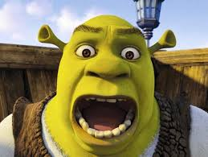
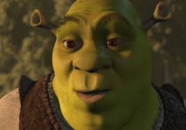

Chi è Shrek?
Shrek è un orco verde protagonista della celebre serie di film d'animazione prodotti dalla DreamWorks. Vive in una palude e ama la sua solitudine, ma la sua vita cambia quando incontra Fiona, Ciuchino e tanti altri personaggi fantastici. Nonostante il suo aspetto burbero, Shrek ha un cuore grande e affronta ogni sfida con coraggio e ironia.

